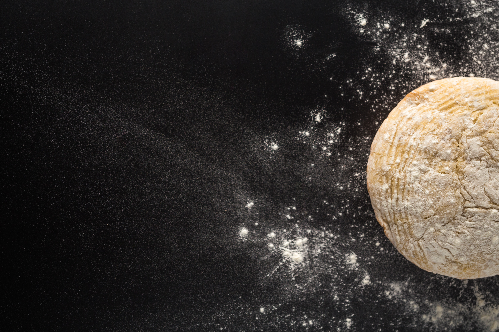

Pizza do Luc
Ingredientes
- 6 xícaras (chá) de farinha de trigo (cerca de 840 g)
- 2 colheres (sopa) de fermento biológico seco (20 g)
- 2 colheres (chá) de açúcar
- 2 colheres (chá) de sal
- 2 ½ xícaras (chá) de água morna
- ¼ de xícara (chá) de azeite
- farinha de trigo para polvilhar a bancada
- azeite para untar a tigela
Processo de criação



Modo de preparo
- Numa tigela, misture o fermento e o açúcar. Regue com a água morna e, com uma colher, misture bem para dissolver. Deixe em temperatura ambiente até espumar – cerca de 5 minutos.
- Enquanto isso, na tigela da batedeira, misture a farinha com o sal e abra um buraco no centro. Separe uma tigela ou outro recipiente grande e unte com 2 colheres (sopa) de azeite – ela tem que ter espaço suficiente para a massa crescer bastante.
- Assim que espumar, despeje a mistura de fermento no centro da tigela com farinha. Adicione ¼ de xícara (chá) de azeite e misture, com uma espátula, apenas para incorporar.
- Para sovar a massa: encaixe a tigela na batedeira com o gancho; comece a bater em velocidade baixa por 5 minutos; aumente a velocidade, aos poucos, para alta e deixe bater por mais 15 minutos até formar uma massa lisa – ela vai descolar da lateral da tigela e formar uma bola no gancho da batedeira.
- Com as pontas dos dedos (ou uma espátula), desgrude a massa da tigela da batedeira e transfira para o recipiente untado com azeite. Cubra com filme e deixe descansar por 1 hora, até crescer e dobrar de volume.
- Quando faltar 30 minutos para completar o tempo de crescimento da massa, preaqueça o forno a 250 ºC (temperatura alta). Se for utilizar uma assadeira de pedra sabão, coloque-a dentro do forno ainda frio para aquecer desde o início – caso contrário, ela pode rachar com o choque térmico.
- Polvilhe uma bancada lisa com farinha de trigo; transfira a massa de pizza para a bancada e, com uma espátula (ou faca) divida em 4 porções. Separe uma porção da massa para abrir e cubra o restante com um pano de prato para não ressecar.
- Com o rolo de macarrão, abra a massa formando um círculo de cerca de 30 cm de diâmetro – lembre-se de sempre polvilhar a bancada com farinha para a massa não grudar.